Flora
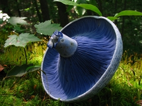
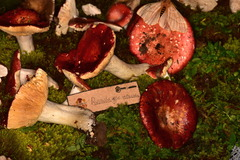
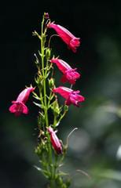
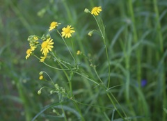
La variedad de árboles que se encuentran en Villa del Carbón incluye: aile, encino y sus variedades (ahualpitzáhual, blanco, enano, capulincillo, colorado, cucharillo, de asta), eucalipto, fresno, madroño, oyamel, pirul, pino y sus variedades (avellano, blanco, colorado, chalmate blanco, chino, hayarín, moctezuma, ortiguillo, prieto, real), sauce, sauce llorón, trueno, entre otros.
Respecto a los arbustos: abrojo, bugambilia, carricillo, carrizo y huizache de chintete.
En hongos silvestres comestibles destacan los hongos azules, patas de pájaro, semas, quechimones, semas de encino, huitlacoche, entre otros. Además, se conocen diversas hierbas medicinales por sus propiedades.
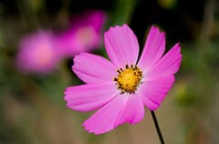
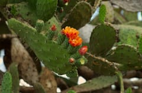
Fauna
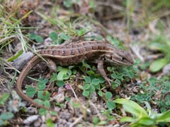
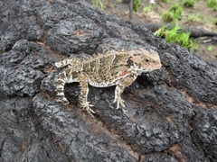
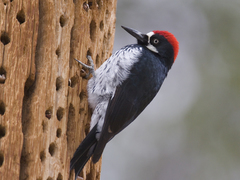
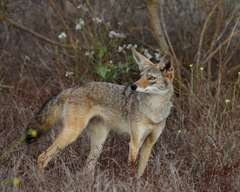
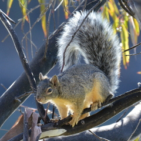
Insectos
En la fauna existen diversas especies de insectos como abeja, araña burrera, araña capulina, araña tarántula, alacrán negro avispa, catarina, cochinilla, chapulín, cucaracha, gorgojo de harina, hormiga negra, mariposas, mosca doméstica, mosquito, palomilla, pulgón, pinacate, luciérnagas; gusanos, como caracol de agua, caracol de jardín, ciempiés, chinicuiles, chizas o cisas, gallina ciega, gusano de maguey, gusano de maíz, gusano de nopal, gusano de tierra, lombriz
Cuadrúpedos
Como ardilla, armadillo, conejo, coyote, onza, rata común, tejón, cacomiztle, tlacuache, tuza, zorra, zorrillo
Aves
Como azulejos, calandria, cenzontle, codorniz, colibrí, correcaminos, dominico, gavilán, gorrión, lechuza, pájara vieja, saltapared, tecolote y zopilote
Reptiles
Como camaleón, cincuate, coralillo, escorpión, hocico de puerco, lagartija, serpiente de cascabel, chirrionera, víbora de cascabel
Peces y Batráqueos
Como ajolote, acociles, carpas, carpa arcoíris, trucha arcoíris, rana, sapo, tijerillas
Fauna Doméstica
Como asnos, caballos, canarios, gansos, gatos, gallinas, guajolotes, loros, perros, pavorreal, mulas, vacas, etcétera.